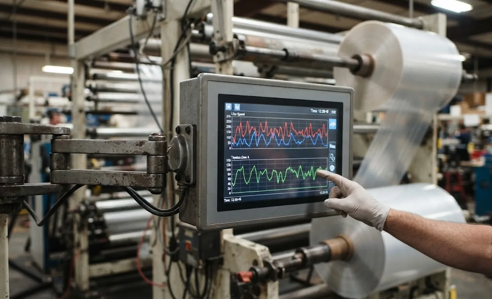

Published October 7, 2026 | By HDPTH Technical Editorial Team
Most slitter rewinder enquiries now include a line about data — connectivity, dashboards, “Industry 4.0”. Far fewer ask the question that determines whether any of it delivers value: what does the machine record, where does it live, and can we open it? SCADA-level logging is the foundation — not a dashboard, not an MES project, but the archive from which everything else is built. Buyers who specify it precisely get machines that answer questions for years. Buyers who accept “data available on request” get screenshots.
SCADA logging versus MES and ERP integration
Keep the layers separate. SCADA logging happens at machine level: tags and events stored in a local historian, browsable by your engineers. MES integration exchanges orders, batches and quality results with planning systems; ERP ties production to cost and inventory. These are different projects with different vendors — and the sequence matters. A machine with a clean, open SCADA archive can be integrated upward any time, by anyone. A machine sold with only a bespoke MES connector inverts the order: you depend on the vendor before you have local data. Compare the scope in MES integration and data logging and ERP integration, then make the local historian your non-negotiable baseline.
What a slitter rewinder should log
Two categories cover everything a converting plant needs, both in one archive keyed by roll and shift:
- Cyclic data — values sampled continuously, typically each second: unwind and rewind tension, line speed, roll diameter, torque, web break sensor state, recipe identity and operator overrides.
- Event data — timestamped occurrences: every web break, splice, alarm, knife or recipe change, shift start and stop, and each finished roll with width, length, weight and quality status.
The trends explain why something happened — the tension dip 0.8 seconds before the break; the events mark when, and let a roll be found by time, shift or identity. Together they turn a customer complaint from an argument into a lookup.
Sampling rate, storage depth and formats
One-second cyclic logging is the practical converting standard: fast enough to catch tension oscillations and speed dips, small enough to store for months. Event timestamps should resolve to milliseconds so a break can be aligned with what preceded it. For depth, plan on 90 days online at minimum, plus an export path so nothing disappears when the buffer rolls over. Storage is cheap; reconstructing a lost trend after a claim is not.
Formats decide whether the data is yours or the vendor’s. Acceptable: CSV export, SQL database writes, subscription through an OPC UA server, or a standard historian interface. Unacceptable: a proprietary format readable only by the vendor’s tool, or data that exists solely in a cloud portal you do not control. The recipe and line data guide applies the same principle: if it lives only in the vendor’s box, it is not your asset.

Connectivity: what to require in the purchase order
| Requirement | What good looks like | Red flag |
|---|---|---|
| Primary interface | OPC UA server with published tag list | “Connectivity via vendor portal only” |
| Secondary interface | Modbus TCP or CSV/SQL export as fallback | Proprietary binary format |
| Tag documentation | Named variables delivered before FAT | Tag list “available after commissioning” |
| Storage location | Local historian on plant hardware you access | Data only in supplier cloud |
| Security | Connection behind plant firewall, per your policy | Always-on external VPN without your control |
Network security deserves its own line in the contract: any connected machine widens the plant’s attack surface, and the boundary rules belong to you — see cybersecurity for connected machines for the questions to ask.
Turning logs into money
An archive pays back when it changes decisions. Shift reports — output, breaks, alarms, stop reasons — make performance comparable without analytics tooling. Web break analysis correlates breaks with the tension and speed curves preceding them, ending the guessing about material, setpoint or upstream supply. Roll traceability links each roll to the recipe, shift and conditions it was made under, so a claim becomes a query — the identity spine described in roll traceability and labeling. Once those run, higher-level views such as the OEE analysis in OEE and downtime data get trustworthy inputs. Without them, even expensive dashboards produce expensive guesses.
Specifying your next slitter rewinder?
Send HDPTH your data requirements — tag list, sampling rate, storage depth, interfaces. We deliver machines with open SCADA logging you own: local historian, documented tags, OPC UA and CSV/SQL export, proven during FAT.
Submit Your Project InquiryFrequently asked questions
What is the difference between SCADA data logging and MES integration?
SCADA logging is the plant-floor memory: tags and events — tension, speed, alarms, roll events — recorded in a local historian for trends, shift reports and troubleshooting. MES integration is the business layer above it, exchanging orders, batches and quality data with planning systems. A machine that logs properly at SCADA level is easy to integrate later; one sold only with a bespoke MES connector locks you in before you have any local data. Buy the historian first.
What data should a slitter rewinder log?
Two categories. Cyclic data at roughly one-second resolution: unwind and rewind tension, line speed, roll diameter, torque, web break sensor state and recipe identity. Event data with timestamps: every web break, splice, alarm, knife or recipe change, shift start and stop, and each finished roll with width, length, weight and quality status. The trends explain why something happened; the events mark when. Both belong in one archive, keyed by roll and shift.
What sampling rate and storage depth do I need?
One-second cyclic logging captures tension oscillations and speed dips that minute averages smooth away, while event records need millisecond timestamps so a web break can be lined up with the tension just before it. For depth, plan on 90 days online at minimum, plus an export path so nothing is lost when the buffer rolls over. Storage is cheap; re-creating a lost trend after a claim is not.
Which connectivity standards should the machine support?
Ask for OPC UA as the primary interface, with Modbus TCP as a widely used fallback, and confirm the supplier publishes the tag list before delivery rather than during commissioning. Also confirm how data leaves the machine: streaming to your historian, CSV export and direct SQL writes are reasonable; a closed proprietary format is not. Whatever the interface, the connection must sit behind your plant firewall rules.
Who owns the logged data, and in what format?
You do — write it into the purchase contract. The machine should store logs on hardware you can access without the supplier, in open formats (CSV, SQL or an OPC UA server you subscribe to), with documentation of every tag. Suppliers keep access to their own diagnostic data; your process data, roll records and alarm history belong to the plant. Ownership and format agreed at order time cost nothing; negotiated after installation, they always cost something.
Sources
- OPC Foundation: OPC UA specification — the standard machine-to-historian interface
- ISA: ISA-95 automation layers and industrial data management resources
- IEC: industrial network and information security standards for connected machinery
- AIMCAL: web converting process data and control education resources